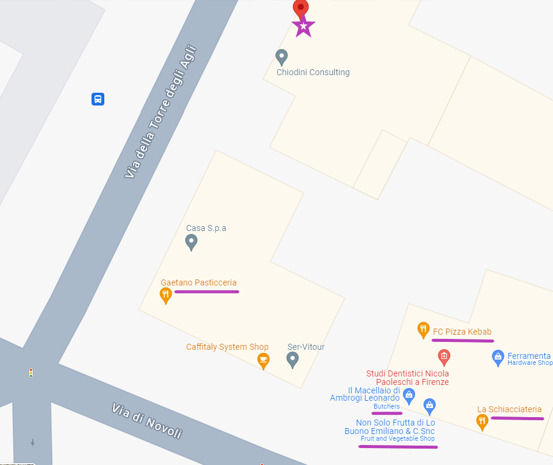

Neighborhood
The Novoli area, while not in the bustling city center, offers a quiet and convenient retreat with a variety of local amenities.
Around the corner
- Enjoy the real italian breakfast at Pasticceria Gaetano just 10 meters away, delicious baked goods from La Schiacciateria bakery,
and experience the famous 'panino con il lampredotto' from the Ambrogi's butcher.
A kebab place and a small grocery shop are just around the corner, and a renowned fish restaurant is also within walking distance.
For shopping, a large mall and a large grocery store are just a 10-15 minute walk away.
The San Donato park is just a 5 minute walk away.

Notes